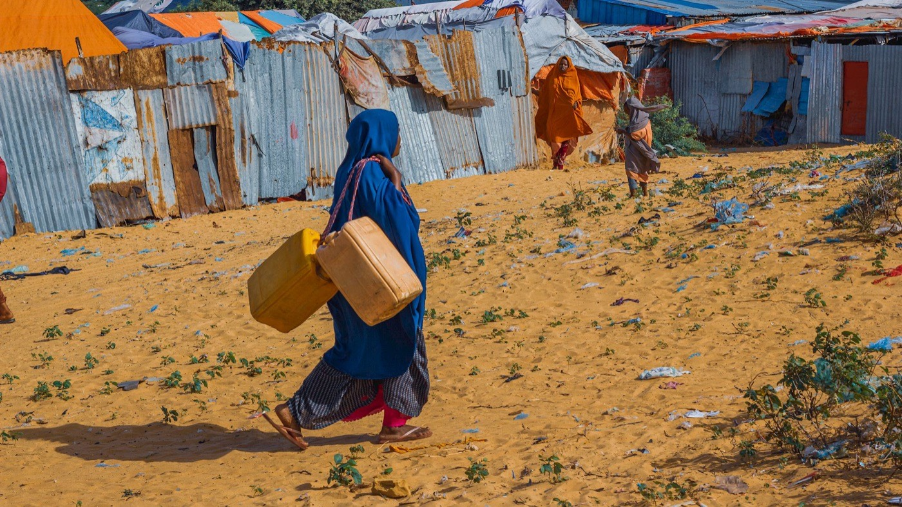
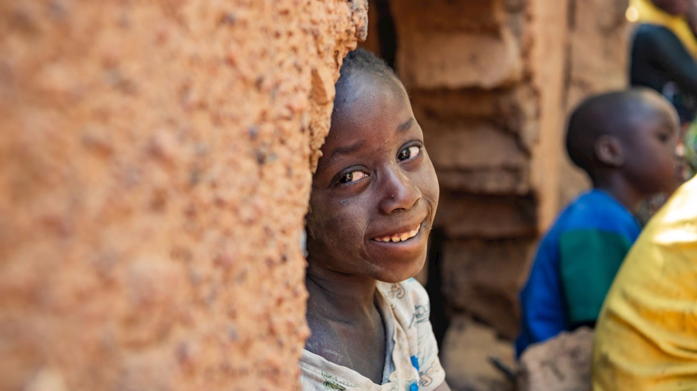

- 100 € de zakat vous coûtent 34 € après réduction d'impôt
- Fonds zakat séparés, tracés et audités
- Nisab mis à jour chaque semaine
Le nisab est défini en poids de métal précieux : sa valeur en euros suit le cours de l'or et de l'argent. Nous la mettons à jour chaque lundi d'après les cours de référence. Pourquoi deux valeurs, laquelle choisir ?
Qu'est-ce que la zakat al maal ?
La zakat al maal est l'aumône obligatoire sur le patrimoine, troisième pilier de l'islam. Chaque musulman dont l'épargne et les biens dépassent le nisab pendant une année lunaire (le hawl) en reverse 2,5 % aux plus démunis. Le mot zakat signifie purification et croissance : elle purifie les biens de celui qui donne et protège celui qui reçoit.
« Accomplissez la salat, acquittez la zakat et inclinez-vous avec ceux qui s'inclinent. » (Coran, 2:43)

Verser ma zakat
250 € vous coûtent 85 € après réduction d'impôt de 66 %.
Verser au fonds Zakat al MaalPaiement sécurisé · reçu fiscal immédiat · fonds zakat séparés
Comment calculer votre zakat
Additionnez vos biens zakatables
Liquidités, comptes courants et épargne, or et argent, actions et placements, créances que vous êtes sûr de récupérer, stocks et trésorerie de votre entreprise.
Retirez vos dettes exigibles
Les dettes à régler dans l'année et les charges courantes se déduisent du total.
Comparez au nisab
Si le résultat dépasse le nisab depuis une année lunaire, la zakat est due.
Versez 2,5 %
Sur la totalité du patrimoine net, pas seulement sur la part qui dépasse le nisab.
Le calculateur de zakat fait ce calcul en deux minutes avec le nisab du jour. Les cas particuliers (épargne salariale, PEL, assurance-vie, cryptomonnaies, biens loués) sont traités dans notre guide détaillé.

Où va votre zakat
Vos fonds zakat sont séparés des autres dons et distribués uniquement aux huit catégories d'ayants droit définies par le Coran (sourate 9, verset 60) : les pauvres, les nécessiteux, ceux qui la collectent, ceux dont les cœurs sont à gagner, les captifs, les endettés, la cause de Dieu et le voyageur en détresse. En 2024, ils ont financé :
4 135 orphelins
Parrainage dans 11 pays : nourriture, école, santé.
Colis et repas chauds
Gaza, Yémen, Somalie, Soudan.
Puits et forages
Pour des villages sans eau potable.
Soins et micro-entreprises
Maternités, formations, petits commerces.
Verser sa zakat en ligne, en une fois ou chaque mois
Vous pouvez verser votre zakat en une fois, ou l'étaler par prélèvement mensuel pour l'avoir réglée avant la date anniversaire de votre calcul. Cochez la case « Zakat » lors du don : votre versement rejoint le fonds zakat, n'est jamais mélangé aux frais de fonctionnement et apparaît comme tel sur votre reçu.

Zakat et impôts
Muslim Hands France est une association d'intérêt général : votre zakat ouvre droit à une réduction d'impôt sur le revenu de 66 % de son montant, dans la limite de 20 % du revenu imposable. 1 000 € de zakat vous coûtent donc 340 €. Le reçu fiscal est envoyé par e-mail immédiatement après le don. Tout savoir sur la déduction fiscale.

Les frais sur la zakat, en toute transparence
Les savants admettent que la catégorie « ceux qui la collectent » couvre les frais de collecte et de distribution. Chez Muslim Hands, ces frais sont plafonnés et publiés chaque année dans le rapport annuel ; le reste est intégralement remis aux ayants droit. Voir la répartition des ressources.

« Quelques semaines avant mes 13 ans, mon père est mort. Grâce au parrainage financé par la zakat, je suis resté à l'école. »Jameer, 13 ans, programme orphelins, Pakistan
Questions fréquentes sur la zakat al maal
Qu'est-ce que la zakat al maal ?
Le troisième pilier de l'islam : 2,5 % de l'épargne et des biens détenus depuis une année lunaire, dès que leur valeur dépasse le nisab.
Quel est le nisab en 2027 ?
Le seuil équivaut à 85 g d'or ou 595 g d'argent. Au 18 octobre 2026, 9 900 € (or) ou 1 154 € (argent). Muslim Hands l'actualise chaque semaine.
Comment calculer ma zakat ?
Additionnez liquidités, or et argent, placements, créances sûres et stocks professionnels ; retirez vos dettes exigibles ; si le total dépasse le nisab, versez 2,5 %.
Ma zakat ouvre-t-elle droit à une réduction d'impôt ?
Oui : 66 % du montant est déductible de l'impôt sur le revenu, dans la limite de 20 % du revenu imposable. Reçu fiscal automatique.
À qui est reversée ma zakat ?
Aux huit catégories de bénéficiaires définies par le Coran, en priorité les orphelins, les familles sans ressources et les victimes de crises.
Puis-je payer ma zakat en plusieurs fois ?
Oui, par prélèvement mensuel ; le total doit être versé avant la date anniversaire de votre calcul.
Quels frais sont prélevés sur la zakat ?
Des frais plafonnés et publiés chaque année dans le rapport annuel ; le reste est remis intégralement aux ayants droit.
Quelle est la différence entre zakat al maal et zakat al fitr ?
La zakat al fitr est l'aumône de fin de Ramadan, due par personne, versée avant la prière de l'Aïd. La zakat al maal porte sur le patrimoine. Voir la page Zakat al Fitr 2027.
La zakat purifie et protège.